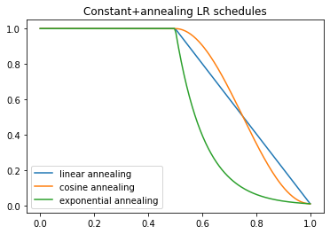
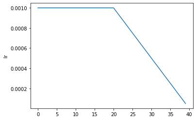
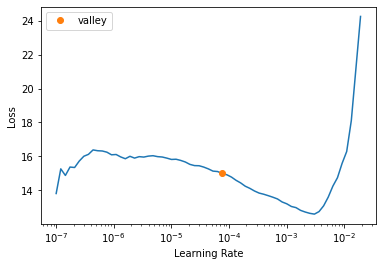
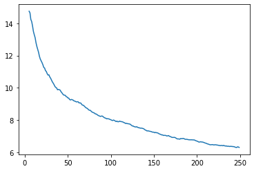
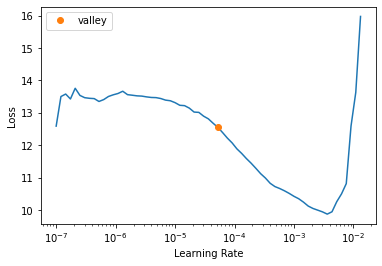
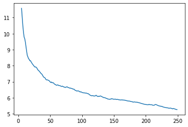

set_seed(999, reproducible=True)CycleGAN training loop
Defines the loss and training loop functions/classes for CycleGAN.
The Loss Function
Let’s start out by writing the loss function for the CycleGAN model. The main loss used to train the generators. It has three parts: - the classic GAN loss: they must make the discriminator believe their images are real. - identity loss: if they are given an image from the domain they are trying to imitate, they should return the same thing - cycle loss: if an image from domain A goes through the generator that imitates domain B then through the generator that imitates domain A, it should be reconstructed as the same initial image. Same for domain B and switching the generators
CycleGANLoss
CycleGANLoss (cgan:torch.nn.modules.module.Module, l_A:float=10.0, l_B:float=10, l_idt:float=0.5, lsgan:bool=True)
CycleGAN loss function. The individual loss terms are also atrributes of this class that are accessed by fastai for recording during training.
Attributes:
self.cgan (nn.Module): The CycleGAN model.
self.l_A (float): lambda_A, weight of domain A losses.
self.l_B (float): lambda_B, weight of domain B losses.
self.l_idt (float): lambda_idt, weight of identity lossees.
self.crit (AdaptiveLoss): The adversarial loss function (either a BCE or MSE loss depending on lsgan argument)
self.real_A and self.real_B (fastai.torch_core.TensorImage): Real images from domain A and B.
self.id_loss_A (torch.FloatTensor): The identity loss for domain A calculated in the forward function
self.id_loss_B (torch.FloatTensor): The identity loss for domain B calculated in the forward function
self.gen_loss (torch.FloatTensor): The generator loss calculated in the forward function
self.cyc_loss (torch.FloatTensor): The cyclic loss calculated in the forward function
CycleGANLoss.__init__
CycleGANLoss.__init__ (cgan:torch.nn.modules.module.Module, l_A:float=10.0, l_B:float=10, l_idt:float=0.5, lsgan:bool=True)
Constructor for CycleGAN loss.
Arguments:
cgan (nn.Module): The CycleGAN model.
l_A (float): weight of domain A losses. (default=10)
l_B (float): weight of domain B losses. (default=10)
l_idt (float): weight of identity losses. (default=0.5)
lsgan (bool): Whether or not to use LSGAN objective. (default=True)
CycleGANLoss.set_input
CycleGANLoss.set_input (input)
set self.real_A and self.real_B for future loss calculation
CycleGANLoss.forward
CycleGANLoss.forward (output, target)
Forward function of the CycleGAN loss function. The generated images are passed in as output (which comes from the model) and the generator loss is returned.
Training loop callback
Let’s now write the main callback to train a CycleGAN model.
Fastai’s callback system is very flexible, allowing us to adjust the traditional training loop in any conceivable way possible. Let’s use it for GAN training.
We have the _set_trainable function that is called with arguments telling which networks need to be put in training mode or which need to be frozen.
When we start training before_train, we define separate optimizers. self.opt_G for the generators and self.opt_D for the discriminators. Then we put the generators in training mode (with _set_trainable).
Before passing the batch into the model (before_batch), we have to fix it since the domain B image was kept as the target, but it also needs to be passed into the model. We also set the inputs for the loss function.
In after_batch, we calculate the discriminator losses, backpropagate, and update the weights of both the discriminators. The main training loop will train the generators.
CycleGANTrainer
CycleGANTrainer ()
Learner Callback for training a CycleGAN model.
CycleGANTrainer._set_trainable
CycleGANTrainer._set_trainable (disc=False)
Put the generators or discriminators in training mode depending on arguments.
CycleGANTrainer.after_batch
CycleGANTrainer.after_batch (**kwargs)
Discriminator training loop
ShowImgsCallback
ShowImgsCallback (imgA:bool=False, imgB:bool=True, show_img_interval:int=10)
Update the progress bar with input and prediction images
ShowImgsCallback.__init__
ShowImgsCallback.__init__ (imgA:bool=False, imgB:bool=True, show_img_interval:int=10)
If imgA is True, display B-to-A conversion example during training. If imgB is True, display A-to-B conversion example. Show images every show_img_interval epochs.
ShowImgsCallback.after_epoch
ShowImgsCallback.after_epoch ()
Update images
CycleGAN LR scheduler
The original CycleGAN paper started with a period of constant learning rate and a period of linearly decaying learning rate. Let’s make a scheduler to implement this (with other possibilities as well). Fastai already comes with many types of hyperparameter schedules, and new ones can be created by combining existing ones. Let’s see how to do this:
combined_flat_anneal
combined_flat_anneal (pct:float, start_lr:float, end_lr:float=0, curve_type:str='linear')
Create a schedule with constant learning rate start_lr for pct proportion of the training, and a curve_type learning rate (till end_lr) for remaining portion of training.
Arguments: pct (float): Proportion of training with a constant learning rate.
start_lr (float): Desired starting learning rate, used for beginnning pct of training.
end_lr (float): Desired end learning rate, training will conclude at this learning rate.
curve_type (str): Curve type for learning rate annealing. Options are ‘linear’, ‘cosine’, and ‘exponential’.
p = torch.linspace(0.,1,200)
plt.plot(p, [combined_flat_anneal(0.5,1,1e-2,curve_type='linear')(o) for o in p],label = 'linear annealing')
plt.plot(p, [combined_flat_anneal(0.5,1,1e-2,curve_type='cosine')(o) for o in p],label = 'cosine annealing')
plt.plot(p, [combined_flat_anneal(0.5,1,1e-2,curve_type='exponential')(o) for o in p],label = 'exponential annealing')
plt.legend()
plt.title('Constant+annealing LR schedules')Text(0.5, 1.0, 'Constant+annealing LR schedules')
Now that we have the learning rate schedule, we can write a quick training function that can be added as a method to Learner using @patch decorator. Function is inspired by this code.
Learner.fit_flat_lin
Learner.fit_flat_lin (n_epochs:int=100, n_epochs_decay:int=100, start_lr:float=None, end_lr:float=0, curve_type:str='linear', wd:float=None, cbs=None, reset_opt=False)
Fit self.model for n_epoch at flat start_lr before curve_type annealing to end_lr with weight decay of wd and callbacks cbs.
from fastai.test_utils import *learn = synth_learner()
learn.fit_flat_lin(n_epochs=2,n_epochs_decay=2)| epoch | train_loss | valid_loss | time |
|---|---|---|---|
| 0 | 23.626183 | 20.342035 | 00:00 |
| 1 | 20.433842 | 13.960705 | 00:00 |
| 2 | 17.039629 | 9.767084 | 00:00 |
| 3 | 14.475015 | 8.587482 | 00:00 |
learn.recorder.plot_sched()
CycleGAN Learner construction
Below, we now define a method for initializing a Learner with the CycleGAN model and training callback.
cycle_learner
cycle_learner (dls:fastai.data.load.DataLoader, m:upit.models.cyclegan.CycleGAN, opt_func=<function Adam>, loss_func=<class '__main__.CycleGANLoss'>, show_imgs:bool=True, imgA:bool=True, imgB:bool=True, show_img_interval:bool=10, metrics:list=[], cbs:list=[], lr:Union[float,slice]=0.001, splitter:<built- infunctioncallable>=<function trainable_params>, path:Union[str,pathlib.Path,NoneType]=None, model_dir:Union[str,pathlib.Path]='models', wd:Union[float,int,NoneType]=None, wd_bn_bias:bool=False, train_bn:bool=True, moms:tuple=(0.95, 0.85, 0.95), default_cbs:bool=True)
Initialize and return a Learner object with the data in dls, CycleGAN model m, optimizer function opt_func, metrics metrics, and callbacks cbs. Additionally, if show_imgs is True, it will show intermediate predictions during training. It will show domain B-to-A predictions if imgA is True and/or domain A-to-B predictions if imgB is True. Additionally, it will show images every show_img_interval epochs. OtherLearner` arguments can be passed as well.
| Type | Default | Details | |
|---|---|---|---|
| dls | DataLoaders | DataLoaders containing fastai or PyTorch DataLoaders |
|
| m | CycleGAN | ||
| opt_func | Optimizer | OptimWrapper | Adam | Optimization function for training |
| loss_func | callable | None | None | Loss function. Defaults to dls loss |
| show_imgs | bool | True | |
| imgA | bool | True | |
| imgB | bool | True | |
| show_img_interval | bool | 10 | |
| metrics | callable | MutableSequence | None | None | Metrics to calculate on validation set |
| cbs | Callback | MutableSequence | None | None | Callbacks to add to Learner |
| lr | float | slice | 0.001 | Default learning rate |
| splitter | callable | trainable_params | Split model into parameter groups. Defaults to one parameter group |
| path | str | Path | None | None | Parent directory to save, load, and export models. Defaults to dls path |
| model_dir | str | Path | models | Subdirectory to save and load models |
| wd | float | int | None | None | Default weight decay |
| wd_bn_bias | bool | False | Apply weight decay to normalization and bias parameters |
| train_bn | bool | True | Train frozen normalization layers |
| moms | tuple | (0.95, 0.85, 0.95) | Default momentum for schedulers |
| default_cbs | bool | True | Include default Callbacks |
Quick Test
horse2zebra = untar_data('https://people.eecs.berkeley.edu/~taesung_park/CycleGAN/datasets/horse2zebra.zip')folders = horse2zebra.ls().sorted()trainA_path = folders[2]
trainB_path = folders[3]
testA_path = folders[0]
testB_path = folders[1]dls = get_dls(trainA_path, trainB_path,num_A=100)cycle_gan = CycleGAN(3,3,64)
learn = cycle_learner(dls, cycle_gan,show_img_interval=1)learn.show_training_loop()Start Fit
- before_fit : [TrainEvalCallback, ShowImgsCallback, Recorder, ProgressCallback]
Start Epoch Loop
- before_epoch : [Recorder, ProgressCallback]
Start Train
- before_train : [TrainEvalCallback, CycleGANTrainer, Recorder, ProgressCallback]
Start Batch Loop
- before_batch : [CycleGANTrainer]
- after_pred : []
- after_loss : []
- before_backward: []
- before_step : []
- after_step : [CycleGANTrainer]
- after_cancel_batch: []
- after_batch : [TrainEvalCallback, CycleGANTrainer, Recorder, ProgressCallback]
End Batch Loop
End Train
- after_cancel_train: [Recorder]
- after_train : [Recorder, ProgressCallback]
Start Valid
- before_validate: [TrainEvalCallback, CycleGANTrainer, Recorder, ProgressCallback]
Start Batch Loop
- **CBs same as train batch**: []
End Batch Loop
End Valid
- after_cancel_validate: [Recorder]
- after_validate : [Recorder, ProgressCallback]
End Epoch Loop
- after_cancel_epoch: []
- after_epoch : [ShowImgsCallback, Recorder]
End Fit
- after_cancel_fit: []
- after_fit : [ProgressCallback]test_eq(type(learn),Learner)learn.lr_find()/home/tmabraham/anaconda3/envs/UPIT/lib/python3.9/site-packages/fastprogress/fastprogress.py:74: UserWarning: Your generator is empty.
warn("Your generator is empty.")
/home/tmabraham/anaconda3/envs/UPIT/lib/python3.9/site-packages/fastai/learner.py:55: UserWarning: Could not load the optimizer state.
if with_opt: warn("Could not load the optimizer state.")SuggestedLRs(valley=7.585775892948732e-05)
learn.fit_flat_lin(5,5,2e-4)| epoch | train_loss | id_loss_A | id_loss_B | gen_loss_A | gen_loss_B | cyc_loss_A | cyc_loss_B | D_A_loss | D_B_loss | time |
|---|---|---|---|---|---|---|---|---|---|---|
| 0 | 11.072145 | 1.640516 | 1.656911 | 0.375354 | 0.837723 | 3.378847 | 3.488000 | 0.335865 | 0.487188 | 00:06 |
| 1 | 9.442083 | 1.247157 | 1.282357 | 0.277883 | 0.259882 | 2.677947 | 2.745830 | 0.266643 | 0.268916 | 00:07 |
| 2 | 8.649205 | 1.111012 | 1.206819 | 0.303226 | 0.315038 | 2.388910 | 2.627970 | 0.253195 | 0.241816 | 00:07 |
| 3 | 8.046769 | 1.097790 | 1.035227 | 0.293115 | 0.301284 | 2.343968 | 2.258730 | 0.247176 | 0.234314 | 00:07 |
| 4 | 7.690011 | 1.046379 | 1.057508 | 0.290288 | 0.330028 | 2.205441 | 2.325534 | 0.250845 | 0.219718 | 00:07 |
| 5 | 7.262819 | 1.013530 | 0.901757 | 0.309617 | 0.314876 | 2.126933 | 2.008702 | 0.240130 | 0.225835 | 00:08 |
| 6 | 6.940499 | 0.943555 | 0.880684 | 0.301979 | 0.329805 | 2.035716 | 1.983523 | 0.242219 | 0.223504 | 00:08 |
| 7 | 6.726294 | 0.928122 | 0.899857 | 0.307265 | 0.320807 | 1.949748 | 2.006305 | 0.231187 | 0.210763 | 00:08 |
| 8 | 6.461397 | 0.884317 | 0.830321 | 0.305884 | 0.326825 | 1.902252 | 1.801770 | 0.229438 | 0.213273 | 00:08 |
| 9 | 6.317296 | 0.896565 | 0.852179 | 0.321770 | 0.320993 | 1.873770 | 1.843444 | 0.221933 | 0.220043 | 00:08 |

learn.recorder.plot_loss(with_valid=False)
dls = get_dls(trainA_path, trainB_path,num_A=100)cycle_gan = CycleGAN(3,3,64)
loss_func = partial(CycleGANLoss, l_idt=0)
learn = cycle_learner(dls, cycle_gan, loss_func=loss_func, show_img_interval=1)test_eq(type(learn),Learner)test_eq(learn.loss_func.l_idt, 0)learn.lr_find()SuggestedLRs(valley=5.248074739938602e-05)
learn.fit_flat_lin(5,5)| epoch | train_loss | id_loss_A | id_loss_B | gen_loss_A | gen_loss_B | cyc_loss_A | cyc_loss_B | D_A_loss | D_B_loss | time |
|---|---|---|---|---|---|---|---|---|---|---|
| 0 | 8.013542 | 0.000000 | 0.000000 | 0.415603 | 0.605523 | 3.475492 | 3.725508 | 0.511603 | 0.547689 | 00:06 |
| 1 | 7.033264 | 0.000000 | 0.000000 | 0.286641 | 0.327472 | 2.772444 | 3.095340 | 0.276890 | 0.271155 | 00:07 |
| 2 | 6.641585 | 0.000000 | 0.000000 | 0.284850 | 0.292105 | 2.692654 | 2.993103 | 0.252079 | 0.252860 | 00:07 |
| 3 | 6.357308 | 0.000000 | 0.000000 | 0.275745 | 0.292774 | 2.705673 | 2.779573 | 0.255172 | 0.255423 | 00:07 |
| 4 | 6.097081 | 0.000000 | 0.000000 | 0.283673 | 0.298791 | 2.574903 | 2.593902 | 0.241834 | 0.228963 | 00:07 |
| 5 | 5.914270 | 0.000000 | 0.000000 | 0.284902 | 0.327440 | 2.468222 | 2.578838 | 0.237878 | 0.232171 | 00:08 |
| 6 | 5.796364 | 0.000000 | 0.000000 | 0.307585 | 0.299103 | 2.421084 | 2.611041 | 0.230458 | 0.239380 | 00:08 |
| 7 | 5.586002 | 0.000000 | 0.000000 | 0.320189 | 0.331698 | 2.315644 | 2.325492 | 0.228474 | 0.232233 | 00:08 |
| 8 | 5.458314 | 0.000000 | 0.000000 | 0.331234 | 0.284459 | 2.333813 | 2.349262 | 0.218699 | 0.244563 | 00:08 |
| 9 | 5.266456 | 0.000000 | 0.000000 | 0.287622 | 0.288966 | 2.267640 | 2.139976 | 0.230699 | 0.244301 | 00:08 |

learn.recorder.plot_loss(with_valid=False)